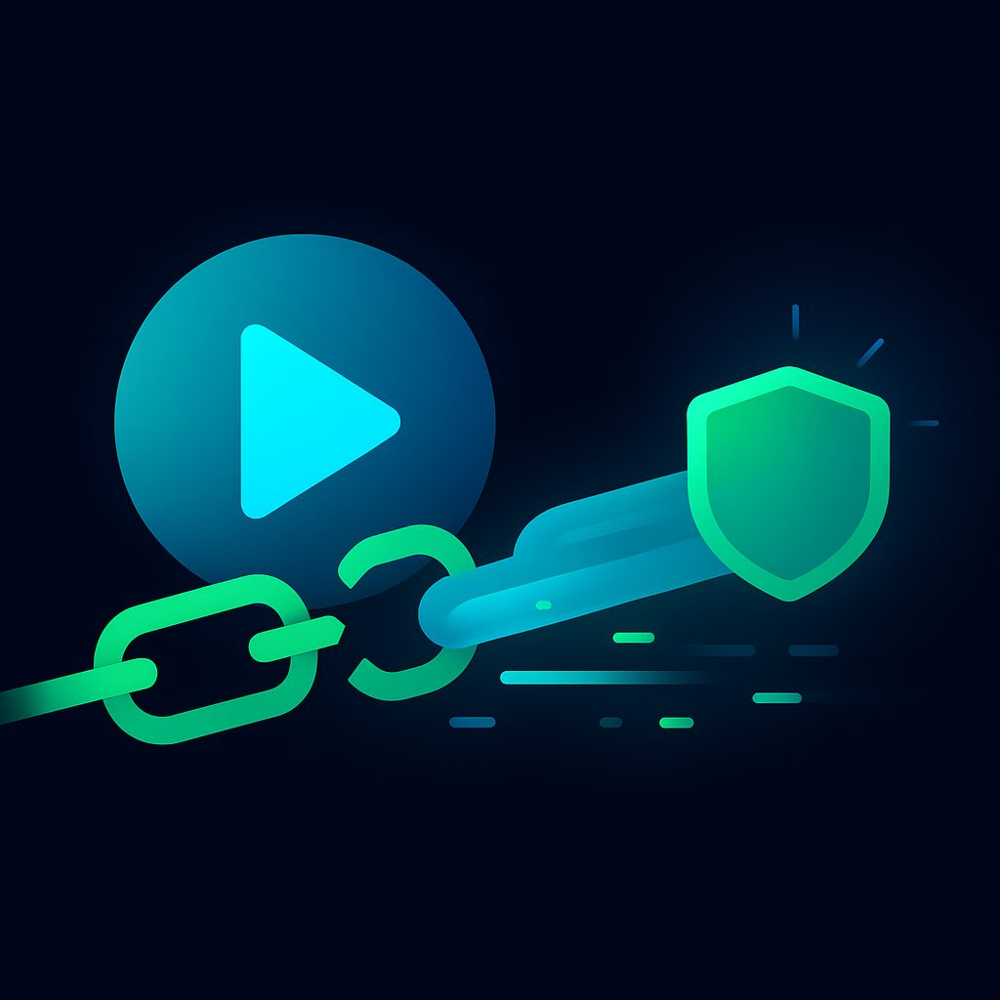

VPN для YouTube: Смотрите любимый контент без границ с NoBorder VPN
YouTube стал неотъемлемой частью нашей цифровой жизни, источником развлечений, обучения и информации для миллионов пользователей по всему миру. Однако в России доступ к этому популярному видеохостингу сталкивается с серьезными ограничениями. Замедление трафика, буферизация видео и низкое качество воспроизведения стали привычной реальностью для многих. В этой статье мы подробно рассмотрим причины этих проблем, а также предложим эффективное решение – использование VPN, в частности, NoBorder VPN, чтобы вернуть себе полноценный доступ к YouTube.
1. Почему YouTube замедлён в России в 2026 году — ТСПУ
Проблемы с доступом к YouTube в России не случайны и имеют под собой технические и законодательные основания. Основной причиной замедления трафика является внедрение и активное использование Технических Средств Противодействия Угрозам (ТСПУ).
Что такое ТСПУ?
ТСПУ – это комплекс программно-аппаратных средств, устанавливаемых на сетях российских операторов связи. Их основная задача – фильтрация интернет-трафика, выявление и блокировка запрещенных ресурсов, а также, что особенно актуально для YouTube, замедление доступа к определенным сервисам. В контексте так называемого "суверенного интернета", ТСПУ являются ключевым инструментом для контроля над информационным пространством.
Как ТСПУ влияют на YouTube?
- Глубокая инспекция пакетов (DPI): ТСПУ используют технологию DPI для анализа содержимого каждого пакета данных, проходящего через сеть. Это позволяет им идентифицировать трафик, принадлежащий YouTube, даже если он зашифрован.
- Шейпинг трафика: После идентификации трафика YouTube, ТСПУ могут целенаправленно замедлять его. Это означает, что для пользователя видео начинает загружаться медленнее, появляются буферизация, а качество воспроизведения автоматически снижается до низких разрешений (480p, 360p).
- Избирательное применение: Замедление может быть не постоянным и не повсеместным. Оно может варьироваться в зависимости от региона, оператора связи и даже времени суток, что создает у пользователя ощущение нестабильности и непредсказуемости работы сервиса.
- Потенциальные блокировки: Хотя на данный момент YouTube не заблокирован полностью, ТСПУ являются технологической основой для такой блокировки в случае принятия соответствующего решения. Замедление же является своего рода "предупреждением" или демонстрацией возможностей контроля.
Законодательная база и цели
Внедрение ТСПУ основано на положениях Федерального закона "О связи" и других нормативных актов, направленных на обеспечение "устойчивости, безопасности и целостности функционирования на территории Российской Федерации информационно-телекоммуникационной сети "Интернет" и сети связи общего пользования". Официально заявленные цели включают борьбу с экстремизмом, детской порнографией и другими противоправными материалами. Однако на практике эти инструменты используются для ограничения доступа к широкому кругу информационных ресурсов, включая независимые СМИ и платформы, которые не подпадают под официальную цензуру.
Таким образом, замедление YouTube в России – это не случайный технический сбой, а целенаправленная политика, реализуемая через ТСПУ, которая существенно ухудшает пользовательский опыт и ограничивает свободу получения информации.
2. Как обойти замедление YouTube с VPN
В условиях активного использования ТСПУ для замедления YouTube, VPN (Virtual Private Network) остается наиболее эффективным и надежным способом восстановить полноценный доступ к видеохостингу. Принцип работы VPN позволяет обойти ограничения, накладываемые провайдерами и государственными системами фильтрации.
Как работает VPN для обхода замедления?
- Шифрование трафика: Когда вы подключаетесь к VPN-серверу, весь ваш интернет-трафик (включая запросы к YouTube и потоковое видео) шифруется. Это означает, что ваш интернет-провайдер и ТСПУ не могут видеть, какие именно данные вы передаете. Они видят лишь зашифрованный поток данных, идущий к VPN-серверу.
- Изменение IP-адреса и местоположения: VPN-сервер присваивает вашему устройству новый IP-адрес, соответствующий местоположению самого сервера. Если вы подключаетесь к серверу в Германии, для всех внешних ресурсов (включая YouTube) будет казаться, что вы находитесь в Германии.
- Обход ТСПУ: Поскольку ТСПУ не могут идентифицировать ваш трафик как трафик YouTube (из-за шифрования) и видят, что вы подключаетесь к "нейтральному" VPN-серверу, они не применяют к нему меры по замедлению. Ваш трафик до VPN-сервера идет без ограничений, а уже с VPN-сервера до YouTube — по международным каналам, где нет российских ТСПУ.
- Оптимизация маршрута: Хорошие VPN-сервисы, такие как NoBorder VPN, имеют оптимизированные маршруты к крупным мировым хабам, где расположены серверы YouTube. Это позволяет получить более стабильное и быстрое соединение, чем прямое подключение через российских провайдеров, чей трафик к YouTube может быть искусственно ограничен.
Почему VPN эффективнее других методов?
- Комплексное решение: VPN не просто меняет IP, но и шифрует весь трафик, обеспечивая приватность и безопасность, что недоступно при использовании прокси или DNS.
- Стабильность: Качественные VPN-сервисы поддерживают стабильное соединение, что критично для потокового видео.
- Гибкость: Возможность выбора серверов в разных странах позволяет не только обходить замедление, но и получать доступ к контенту, который может быть недоступен в вашем регионе из-за гео-ограничений (например, некоторые фильмы или трансляции).
Использование VPN превращает ваше соединение в защищенный туннель, проходящий мимо систем контроля трафика. Вы получаете возможность смотреть YouTube в высоком качестве, без буферизации и с привычной скоростью, словно замедления никогда и не было.
3. Какой VPN для YouTube — требования (скорость, серверы EU)
Выбор подходящего VPN-сервиса для YouTube критически важен, так как не все VPN одинаково эффективны. Чтобы обеспечить комфортный просмотр видео в высоком качестве, необходимо учитывать несколько ключевых требований. NoBorder VPN разработан с учетом этих потребностей.
Основные требования к VPN для YouTube:
1. Высокая скорость соединения
Это, пожалуй, самое важное требование. Для стабильного просмотра YouTube в 1080p требуется скорость соединения не менее 5-8 Мбит/с, а для 4K — 15-20 Мбит/с и выше. VPN-сервис должен обеспечивать минимальные потери скорости, что зависит от:
- Пропускной способности серверов: Серверы должны быть способны обрабатывать большой объем трафика без перегрузок.
- Оптимизации протоколов: Использование современных и быстрых протоколов, таких как WireGuard или OpenVPN (в режиме UDP), значительно влияет на скорость.
- Расстояния до сервера: Чем ближе сервер к вам географически, тем ниже задержка (пинг) и потенциально выше скорость.
- NoBorder VPN: Мы используем высокопроизводительные серверы с широкими каналами связи и оптимизированные протоколы, чтобы обеспечить максимально возможную скорость для наших пользователей.
2. Наличие серверов в странах Европейского Союза (EU)
Выбор локации сервера имеет несколько причин:
- Географическая близость к России: Серверы в странах EU (например, Германия, Нидерланды, Финляндия, Польша, Чехия) находятся относительно близко к России. Это минимизирует задержку (пинг) и обеспечивает более стабильное и быстрое соединение по сравнению с серверами в США или Азии. Меньший пинг особенно важен для интерактивного контента или стримов.
- Отсутствие гео-ограничений: В странах EU нет замедления YouTube, и доступ к нему осуществляется без проблем. Кроме того, большинство контента YouTube доступно для просмотра из EU, без региональных блокировок, которые могут встретиться, например, в некоторых азиатских странах.
- NoBorder VPN: Мы предлагаем широкий выбор серверов в различных странах EU, что позволяет нашим пользователям выбрать наиболее оптимальный сервер для максимальной скорости и стабильности.
3. Надежное шифрование и безопасность
Хотя основная цель — доступ к YouTube, безопасность и конфиденциальность не должны быть второстепенными. VPN должен использовать сильные алгоритмы шифрования (например, AES-256) и надежные протоколы, чтобы защитить ваш трафик от перехвата и анализа. Это также гарантирует, что ваш интернет-провайдер не сможет определить, что вы используете VPN для доступа к YouTube, и, соответственно, не сможет применить к этому трафику дополнительные ограничения.
- NoBorder VPN: Мы применяем самые современные стандарты шифрования и протоколы, чтобы обеспечить полную анонимность и безопасность вашего онлайн-присутствия.
4. Отсутствие логов (No-Logs Policy)
Политика отсутствия логов означает, что VPN-провайдер не хранит никакой информации о вашей онлайн-активности, IP-адресах, времени подключения и другом. Это критически важно для вашей конфиденциальности. Если провайдер не ведет логи, то даже при запросе данных от третьих сторон, ему будет нечего предоставить.
- NoBorder VPN: Мы строго придерживаемся политики отсутствия логов, гарантируя, что ваша активность остается полностью конфиденциальной.
5. Стабильность соединения и отсутствие обрывов
Ничто так не раздражает при просмотре видео, как постоянные обрывы соединения. Качественный VPN должен обеспечивать стабильное и бесперебойное подключение. Это достигается за счет надежной инфраструктуры серверов и эффективного управления сетью.
6. Простота использования и поддержка
Удобный интерфейс приложения и быстрая техническая поддержка важны, особенно для новичков. Возможность быстро подключиться к серверу и получить помощь при возникновении вопросов значительно улучшает пользовательский опыт.
- NoBorder VPN: Наше приложение интуитивно понятно, а служба поддержки всегда готова помочь.
Выбирая VPN для YouTube, убедитесь, что он соответствует этим критериям. NoBorder VPN разработан именно для того, чтобы удовлетворить все эти требования, обеспечивая быстрый, безопасный и неограниченный доступ к вашему любимому видеоконтенту.
4. Пошаговая инструкция по использованию NoBorder VPN для YouTube
Использование NoBorder VPN для обхода замедления YouTube — это простой и быстрый процесс. Следуйте этой пошаговой инструкции, чтобы начать смотреть видео в высоком качестве без ограничений.
Шаг 1: Зарегистрируйтесь и скачайте приложение NoBorder VPN
- Посетите официальный сайт NoBorder VPN: Откройте ваш веб-браузер и перейдите на официальный сайт NoBorder VPN.
- Выберите тарифный план: NoBorder VPN предлагает различные тарифные планы. Выберите тот, который наилучшим образом соответствует вашим потребностям.
- Зарегистрируйтесь и оплатите подписку: Пройдите процесс регистрации, создайте учетную запись и оплатите выбранный тарифный план.
- Скачайте приложение: После успешной регистрации и оплаты, на сайте вам будут предложены ссылки для скачивания приложения NoBorder VPN для вашей операционной системы (Windows, macOS, Android, iOS, Linux). Выберите нужную версию и скачайте установочный файл.
Шаг 2: Установите и запустите приложение NoBorder VPN
- Установка на ПК (Windows/macOS/Linux):
- Найдите скачанный установочный файл (обычно в папке "Загрузки").
- Дважды щелкните по нему и следуйте инструкциям на экране для завершения установки. Это стандартный процесс, который занимает всего несколько минут.
- Установка на мобильные устройства (Android/iOS):
- Перейдите в Google Play Store (для Android) или App Store (для iOS).
- В строке поиска введите "NoBorder VPN" и найдите наше приложение.
- Нажмите "Установить" или "Загрузить". Приложение будет установлено автоматически.
- Запустите приложение: После установки найдите иконку NoBorder VPN на рабочем столе, в меню "Пуск" (Windows), в папке "Приложения" (macOS) или на домашнем экране (мобильные устройства) и запустите его.
Шаг 3: Войдите в свою учетную запись
- Введите данные для входа: При первом запуске приложение попросит вас ввести логин и пароль, которые вы использовали при регистрации на сайте NoBorder VPN.
- Авторизуйтесь: Нажмите кнопку "Войти" или "Log In".
Шаг 4: Выберите сервер в Европейском Союзе (EU)
- Откройте список серверов: В интерфейсе приложения NoBorder VPN найдите кнопку или раздел, который позволяет просматривать список доступных серверов. Обычно это называется "Локации", "Серверы" или "Выбрать страну".
- Выберите страну EU: Прокрутите список и выберите сервер в одной из стран Европейского Союза. Рекомендуется выбирать страны, которые географически ближе к России для достижения максимальной скорости и минимального пинга. Например:
- Германия
- Нидерланды
- Финляндия
- Польша
- Чехия
- Швеция
Если в выбранной стране есть несколько серверов, можно попробовать несколько, чтобы найти наиболее быстрый. Некоторые приложения VPN могут автоматически рекомендовать "лучший" или "самый быстрый" сервер.
Шаг 5: Подключитесь к VPN-серверу
- Нажмите кнопку "Подключиться": После выбора сервера, нажмите большую кнопку "Подключиться" (Connect) или "Включить" (On) в главном окне приложения NoBorder VPN.
- Дождитесь установления соединения: Приложение покажет статус подключения. Обычно это занимает несколько секунд. Когда соединение будет установлено, статус изменится на "Подключено" (Connected), и вы увидите индикатор активного VPN-соединения (часто в виде ключа или щита в строке состояния).
- Подтверждение (для мобильных устройств): На Android и iOS при первом подключении VPN система может запросить разрешение на создание VPN-соединения. Подтвердите это действие.
Шаг 6: Откройте YouTube и наслаждайтесь просмотром
- Запустите YouTube: Откройте ваш браузер и перейдите на YouTube.com